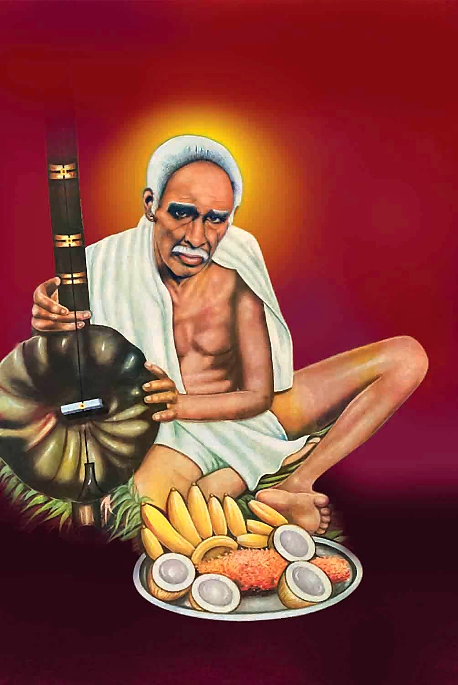

Life of Sri Venkaiah Swamyశ్రీ వెంకయ్య స్వామి జీవిత చరిత్ర

- c. 1880 – 1890Born in Nagula Vellaturu village, Nellore district. నెల్లూరు జిల్లా నాగులవెల్లటూరు గ్రామంలో జననం.
- Early yearsబాల్యంLeaves home; years of tapas in the Penchalakona hills and along the Penna river. ఇల్లు విడిచి పెంచలకోన కొండలలో, పెన్నా నది తీరాన తపస్సు.
- 1974Settles permanently at Golagamudi near Nellore. నెల్లూరు సమీపంలోని గొలగమూడిలో శాశ్వత నివాసం.
- 24 August 1982Mahasamadhi at Golagamudi. గొలగమూడిలో మహాసమాధి.
Birth and early lifeజననం, బాల్యం
Sri Venkaiah Swamy was born in the late nineteenth century in Nagula Vellaturu, a small village in Nellore district of Andhra Pradesh. The exact date is not recorded; devotees place his birth between 1880 and 1890. His parents were Sompalli Pitchamma and Penchalaiah, and he was the eldest of their four children, with two brothers and a sister. శ్రీ వెంకయ్య స్వామి పంతొమ్మిదవ శతాబ్దం చివరలో ఆంధ్రప్రదేశ్లోని నెల్లూరు జిల్లా నాగులవెల్లటూరు అనే చిన్న గ్రామంలో జన్మించారు. ఖచ్చితమైన తేదీ నమోదు కాలేదు; భక్తులు ఆయన జననాన్ని 1880 – 1890 మధ్య కాలంగా భావిస్తారు. తల్లిదండ్రులు సొంపల్లి పిచ్చమ్మ, పెంచలయ్య. ఇద్దరు తమ్ముళ్లు, ఒక చెల్లెలు గల కుటుంబంలో ఆయన పెద్ద కుమారుడు.
Even as a boy he was drawn to solitude. He would sit alone for long hours, uninterested in play or in the ordinary concerns of village life, absorbed in silent contemplation. The family soon understood that this child was not meant for a worldly path. బాల్యం నుంచే ఆయన ఏకాంతం వైపు ఆకర్షితులయ్యారు. ఆటలపైనా, గ్రామ జీవితపు సాధారణ విషయాలపైనా ఆసక్తి లేకుండా గంటల తరబడి ఒంటరిగా కూర్చుని మౌనంగా ధ్యానంలో మునిగిపోయేవారు. ఈ బాలుడు లౌకిక మార్గం కోసం పుట్టలేదని కుటుంబం త్వరలోనే గ్రహించింది.
Years of tapasతపస్సు కాలం
Leaving his native village, Swamy went to the Penchalakona hills, the sacred place associated with the sage Kanva, and spent long years there in tapas. Later he wandered along the banks of the Penna river, owning nothing, accepting whatever food was offered, and sleeping wherever night found him. In these years he attained the state of an Avadhuta, one who lives beyond all worldly attachments. స్వగ్రామాన్ని విడిచి స్వామి కణ్వ మహర్షి తపోభూమి అయిన పెంచలకోన కొండలకు వెళ్లి అక్కడ ఎన్నో సంవత్సరాలు తపస్సు చేశారు. ఆ తర్వాత పెన్నా నది తీరం వెంబడి సంచరిస్తూ, ఏమీ సొంతం చేసుకోకుండా, ఎవరు ఏమి పెడితే అది స్వీకరిస్తూ, ఎక్కడ రాత్రి అయితే అక్కడే నిద్రిస్తూ గడిపారు. ఈ కాలంలోనే ఆయన అన్ని లౌకిక బంధాలకు అతీతమైన అవధూత స్థితిని పొందారు.
Golagamudiగొలగమూడి
Swamy visited Golagamudi, a village in Venkatachalam mandal near Nellore, for many years and from 1974 lived there permanently. Word of his presence spread and people came from every community and every walk of life. He made no distinction of caste, religion or wealth. Devotees speak of illnesses cured, troubles resolved and lives quietly set right in his presence. He spoke little, and what he said was in plain village Telugu, but his words stayed with those who heard them. నెల్లూరు సమీపంలోని వెంకటాచలం మండలం గొలగమూడి గ్రామాన్ని స్వామి ఎన్నో సంవత్సరాలు దర్శించేవారు; 1974 నుండి అక్కడే శాశ్వతంగా నివసించారు. ఆయన సన్నిధి గురించి తెలిసి అన్ని వర్గాల, అన్ని స్థాయిల ప్రజలు వచ్చేవారు. కులం, మతం, ధనం అనే భేదం ఆయనకు లేదు. ఆయన సన్నిధిలో రోగాలు నయమవడం, కష్టాలు తీరడం, జీవితాలు సవ్యంగా మారడం గురించి భక్తులు చెబుతారు. ఆయన తక్కువగా మాట్లాడేవారు; మాట్లాడినది సాధారణ పల్లె తెలుగులో ఉండేది, కానీ ఆ మాటలు విన్నవారి హృదయాల్లో నిలిచిపోయేవి.
Mahasamadhiమహాసమాధి
On 24 August 1982 Sri Venkaiah Swamy left his physical body at Golagamudi. His body was interred in the building he had himself consecrated, and that spot became the Samadhi Mandir. The small shrine has grown into a large ashram complex that draws lakhs of devotees, especially during the annual Aradhana Mahotsavam from 18 to 24 August. 1982 ఆగస్టు 24న శ్రీ వెంకయ్య స్వామి గొలగమూడిలో భౌతిక దేహాన్ని విడిచారు. ఆయన స్వయంగా ప్రతిష్ఠించిన భవనంలోనే ఆయనను సమాధి చేశారు; అదే స్థలం సమాధి మందిరమైంది. చిన్న గుడిగా మొదలైన ఆ స్థలం నేడు పెద్ద ఆశ్రమ సముదాయంగా ఎదిగి, ముఖ్యంగా ప్రతి సంవత్సరం ఆగస్టు 18 – 24 జరిగే ఆరాధన మహోత్సవానికి లక్షలాది భక్తులను ఆకర్షిస్తోంది.
Legacyవారసత్వం
Temples dedicated to Swamy have since come up across Andhra Pradesh, including here at Sullurupeta, so that devotees may remember him and follow his simple teaching: love everyone equally, live by dharma, and remember God with complete faith. ఆ తర్వాత ఆంధ్రప్రదేశ్ అంతటా, ఇక్కడ సూళ్లూరుపేటలో సహా, స్వామివారికి ఆలయాలు వెలిశాయి. భక్తులు ఆయనను స్మరించి, ఆయన సరళమైన బోధనను అనుసరించడానికి: అందరినీ సమానంగా ప్రేమించండి, ధర్మంగా జీవించండి, పూర్తి విశ్వాసంతో భగవంతుని స్మరించండి.
Dates and places above are as recorded by devotee organisations; please send corrections through the contact page.పై తేదీలు, స్థలాలు భక్త సంస్థల నమోదు ప్రకారం; సవరణలు ఉంటే సంప్రదింపు పేజీ ద్వారా తెలియజేయండి.